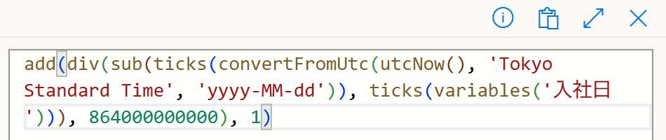
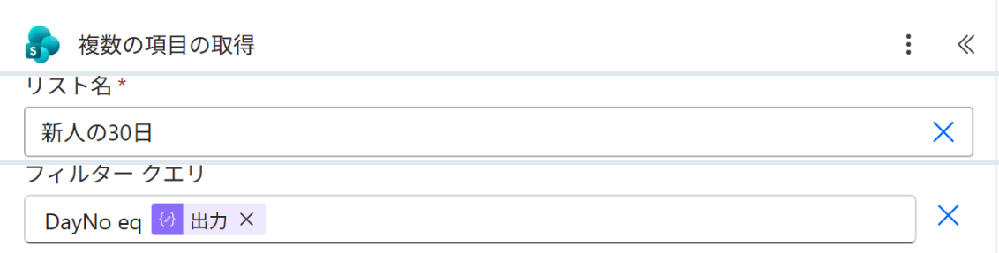

Vol.147-4
要の設定は日数の式とフィルター

「作成」で今日が何日目かを出し、その数字でリストの行を1つに絞ります。
DayNo は数値の列なので、フィルターの値を ' で囲まずに書きます
DayNo は数値の列なので、フィルターの値を ' で囲まずに書きます

A
A
ticks の差を 864000000000（1日ぶん）で割って日数にし、＋1で入社日を1日目にするA
今日の日付は
convertFromUtc(utcNow(),'Tokyo Standard Time','yyyy-MM-dd') で日本時間にしてから比べる
B
C
B
リスト名 新人の30日
C
フィルター クエリ
DayNo eq のあとに「作成」の出力資料を足すときはリストに1行。フローはそのまま
出典：Microsoft Learn